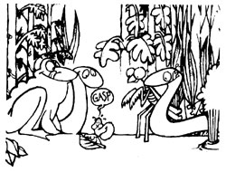
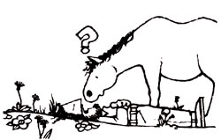

Craig and Deb Purnell protect their garden with a jeep and a minnow bucket! On a sunny day in early spring-about a month after the first peepers come out-they head out to the honeysuckle patch with the "minnie" pail and gather up a dozen or so praying mantises. Then they unload the spindly insects (along with any garter snakes they find) right smack in the middle of the veggie patch.
Next-on one of those rainy spring nights-the Purnells hop into their four-wheeler and slowly cruise down the road. Every time the jeep headlights "freeze" a roadside toad, Craig and Deb stop and check it out. They load all the three-inch-or-bigger hoppers they find into the trusty minnow holder ... and lug those critters back to the garden, too.
The Fayetteville, Pennsylvania folks swear the "natural pesticides" are such great garden guardians that their patch raises nothin' but bug-free veggies Just remember not to bring any frogs back from your toad roundups when you try this system. The pondlovers will die when their wet, smooth skin dries out (toads have bumpy, fairly dry coverings). Don't pick up any little hoppin' critters, either ... because the garter snakes'll eat them along with the bugs.
A praying mantis might be able to handle a mealybug, but perhaps your garden pests are a bit more intimidating critters ... like big deer or hungry groundhogs! If that's the case, take a look at the methods three different MOTHER readers use to protect their "territories".
Martin Rowe of Salem, Oregon simply shovels his dog droppings and cat-box contents around the borders of his vegetable patch. Martin's found that any woodland visitor that smells such warning signals will stay away ... because the critter's more worried about being-than getting-dinner.
Leonard Hutchins of Oxbow, Maine has successfully used bobcat and fisher urine to keep swallows, porcupines, squirrels, and rats away from his deserted-food-stocked-winter ca in ... and figures this "cure" would be bound to work for a plain of' garden, too. Len says that (if you're temporarily out of either kind of wild animal excreta) you can get the varmint-scaring liquid from a trappers' supply store.
And Pat Patera of the North Woods outside Florence, Wisconsin scatters tankage-from any wild animals she cleans-around the sides of her vegetable plot. Besides that Ms. Patera takes the entire claim-your-turf-by-smell theme to its logical conclusion: She protects her garden with human urine! "Before you say 'Ugh!' " Pat says, "let me point out that both the animal leavings and my own waste go nearby-but not directly on-the vegetable patch ... and that all last summer no one in my family ever smelled anything offensive.
"Most important," she adds, "the method works! My wilderness neighbors used to chomp down every one of my green goodies. But-ever since I've taken to 'water-staking' my claim-I haven't found a single hoofprint or even a nibbled leaf in the garden ... not once!"
Here's a trio of do-more-with-less ideas:
[1] When Loretta Lank of Berwyn, Illinois got tired of the high price of liquid dish detergent ("Money down the drain," says Loretta), she started diluting one part of the costly pan soap with three parts water ... and got four bottles of perfectly good detergent for the price of one!
[2] Mrs. Dan Stanley-who lives outside of Spring City, Tennessee-tried a similar ploy with shampoo and cream rinse after her three appearance-conscious teenagers just about "washed away" her funds. The sly mother thinned both kinds of hair liquid by half-with water-to double her supply of the scalp tonics ... and the young folks didn't even notice!
And [3], Sherry Berkeypile unwraps her hand soap at least two weeks before she washes with it. The Jackson, Michigan woman stores the uncovered skin cleaner in clothes drawers, closets, or even musty cars. After the "air fresheners" have dried out, she puts them by the basin ... and the hardened bars last more than twice as long as ordinary, "uncured" soap blocks do!
"No matter how fast I squeezed and pulled," says Louise A. Smith of Douglasville, Georgia, "my cow was always done eatin before I finished milking. Thenevery time-she'd fidget around so much I could barely hold on! Oh, I tried giving her more of that expensive feed (hay didn't Interest that fussy female) ... but the more vittles I added, the faster she ate.
"Then I took a friend's suggestion and put three large stones in her feed trough. Those rocks work like magic! They get in my cow's way, so now ol' Bossie eats-and I milk-a lot slower. I'm done the same time she is ... and I don't feel as if I'd just finished a race!"
Lots of folks grow bean sprouts for health and good eating, but not many save the water used to soak the tiny plants. Mrs. John Rader does,though ... and-by golly-it pays off! She takes that alfalfa seed drain water (especialy the juice" from the first rinsing) and feeds it to her houseplants. The results? Well, one Christmas cactus the Elroy, Wisconsinite treated with sprout "sprinklin's" used to put out one or two pitiful blossoms-at best-but now cascades over its hanging container ... and dis. plays more flowers than the Dairy Stater can count! Not only that, her African violets grow leaves as big as the palm of a hand ... and bear flowers all year round!
Mrs. Rader's just begun experimenting with the potent rinse water. She now drinks it-plain or mixed with fruit juice-as a health tonic (and gives some to her pets). The sprout-loving woman plans to raise this spring's vegetable seedlings on the alfalfa elixir as well. Mrs. Rader's motto: "Don't throw out the baby or the bath water."
We thought nobody could ever come up with a practical use for those soda can "fliptops" that litter our countrysides, but I guess we didn't reckon with J. Kevin Tucker of Manhattan, Kansas ... or rather, with his picture-taking girlfriend. The female photographer glues the tongues of leftover aluminum pop-tops to the backs of her pictures (she uses a silicone sealant, but epoxy would do), and-easy as that!- the "tinbits" become perfect loops for hanging her camera art.
If the mountain moonshiners of old are remembered for their earthen demijohns, the modern homesteader will probably be noted for (what else?) the plastic jug. Today's down-home folks use the long-lasting containers as scoops, floats, funnels, buckets, bird feeders, yarn holders, loudspeakers ... and more. Richard Maine of Richfield Springs, New York has yet another dandy way to utilize the translucent jugs. Rich says, "Just cut the bottom off a gallon milk-holder, mosey out to the garden ... and put that 'miniature greenhouse' over any sick, wilted, or spindly young transplant (pack some dirt around the container's sides to hold it in place). On sunny days, take the jug's lid off-to let built-up heat escape-and put the cap back on during frosty nights. The plastic hothouse will let light through its walls, yet protect your young vegetable from wind, hard rain, and extreme heat or cold. Plus, you can waterless often than before-right through the top ... and remove the jug for good when the healthy plant begins to outgrow the vessel."
Nowadays, Richard starts his spring garden weeks earlier than he did before he learned about these recycled frost-protectors. Not only that, the resourceful New Yorker gets all his plants for free! He simply takes dying nursery rejects ... and "greenhouses" them back to health!
Some folks take the "horse sense" part of this column's tip-requesting paragraph literally ... like Shirkee Tanis, an equestrienne out in Grand Rapids, Michigan. The Wolverine Stater wants everyone to know how to catch a horse that gets out of its pen. The way to rescue the runaway animal-says Shirkee-is to hide your halter behind your back, approach the steed slowly (don't chase or excite the critter) ... and bring along a bucket of the beast's favorite goodie. Stop and talk to the animal once in a while, then-as soon as you're close enough for the horse to smell those oats, apples, carrots, or whatever-stand still, and let the runaway come up for some chow. At that point, simply pet the critter gently ... and slip the halter over its head. Shirkee urges horseowners not to punish the beasts for their "offense", since such treatment only instills fear.
William Adams accidentally developed a brand new bit of horse-catching sense. This Hawkinsville, Georgia horse trainer once had to catch a green colt that was running loose in a three-acre pasture. Well, after an hour and a half, Bill was so worn-out that he just flung himself right down In the middle of the field. Yep-you guessed it-the dang critter was so interested in what the weary fella wasn't doing that it just ambled on up to him. Nowadays Bill plops down every time a horse gets loose. The "laid back" technique sure makes other horse folk gape, but it works ... every time.
OK. Now it's YOUR turn! We've all come up with some practical, down-home, time-tested solutions to the frustrating little problems that bug us every day. Let's hear YOUR best "horse sense" ideas so we can share 'am and all benefit
Send your pointers to Down-Home Country Lore, P.O. Box 70, Hendersonville, North Car olina 28739, and I'll make sure that the most useful of the suggestions will appear in upcoming editions. A one-year subscription-or a oneyear extension of an existing subscription-will then be sent to each contributor whose tip does get printed in this column.- MOTHER.
|
|
 |
 |